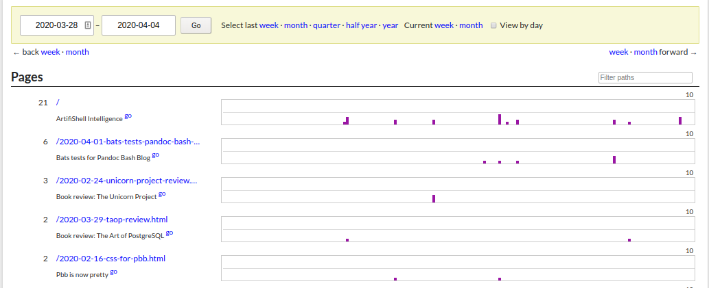

2020-04-04
Is anybody even reading any of this? The question is only semi-important, because half of the fun of building my own static site generator is actually using it.
It would still be interesting to know, though. I don’t really want to use Google Analytics because a) it’s total overkill and b) I like it when websites reduce the amount of data they shovel to tech giants at least somewhat.
The proper answer is of course roll your own
, but I’m not hosting my website myself currently.
Enter GoatCounter! It does everything I want, is very easy to integrate, and part of the rationale for the project is to help de-Google-fying
the internet a little, which sounds like a good idea. Don’t get me wrong, I use Google for pretty much everything, but there should always be alternatives.
The project is very privacy minded and, as explained in the privacy policy, does not store any personal information about visitors. It is open source and can be inspected on GitHub.
Part of the project’s philosophy is to provide a free tier for non-commercial usage, which is pretty awesome. After trying it for a while, I liked it enough to start sponsoring the author. I’ve actually come across Martin before: he used to be quite active on Meta Stack Overflow, is the highest rep user on the Vi and Vim Beta Stack Exchange, and his blog regularly pops up on the front page of Hacker News, which is where (I think) I’ve first heard of GoatCounter.
To answer the question from above: people do read what I write. (Or at least visit the site.) Even if only in very modest numbers.

I wonder if the Bash testing framework Bats really is so interesting that my post about using it to test pbb tops the list, or maybe another currently ongoing and slightly bat-related event might be the reason for this peculiarity.
I’m using GoatCounter for my own site, but I also wanted to integrate it with Pandoc Bash Blog. To this end, there is a new subcommand pbb gccode (as in GoatCounter code), which adds the site specific code into an HTML snippet which, if the configuration setting for the code exists, gets added to each page.
Adding something right before the </body> tag (which is where the GoatCounter snippet goes) is directly supported by Pandoc via the -A/--include-after-body option. This means I didn’t have to touch the HTML template and can keep using the default; one day, I’ll have to modify it, but not quite yet.